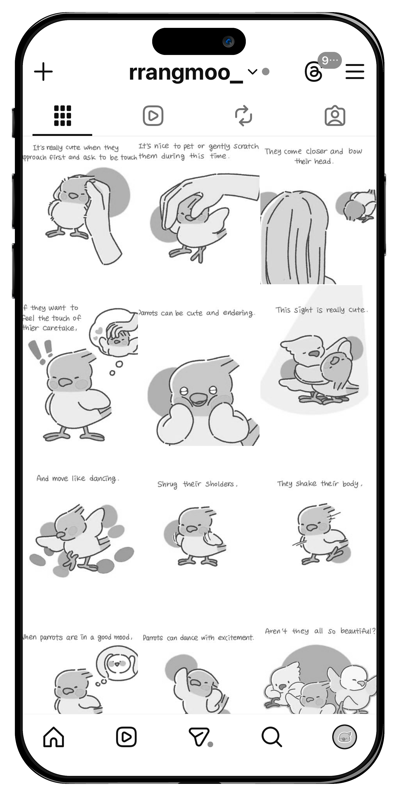
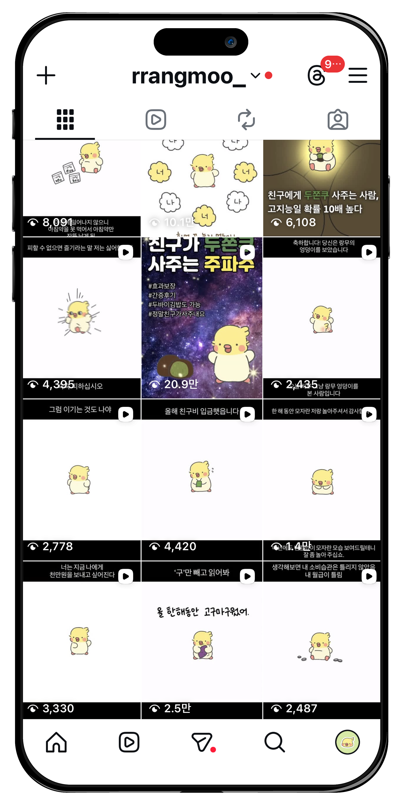
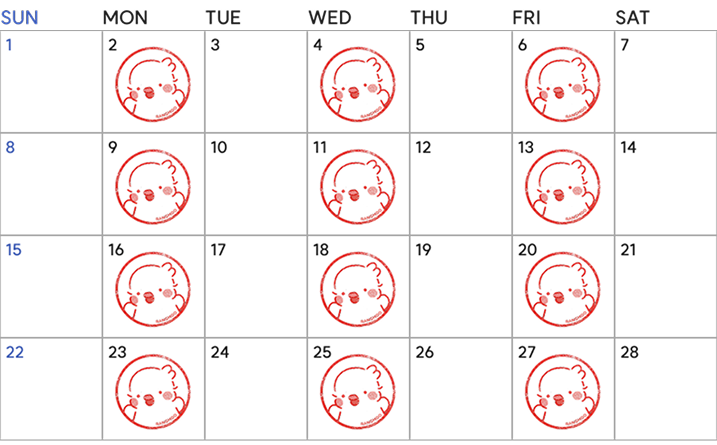
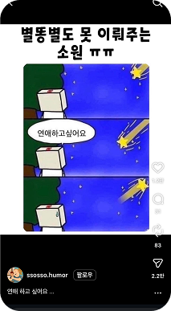
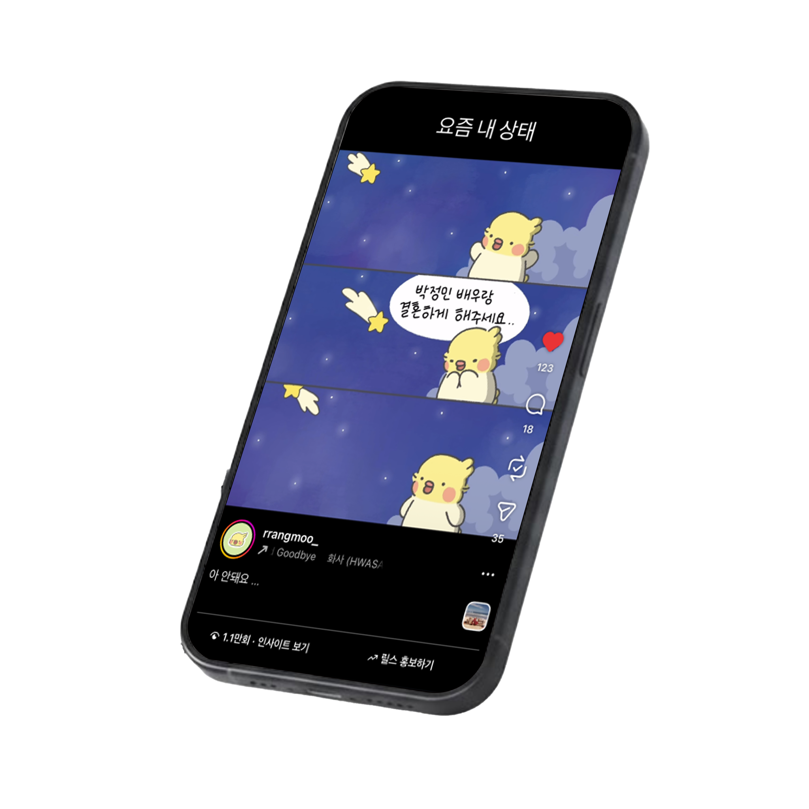
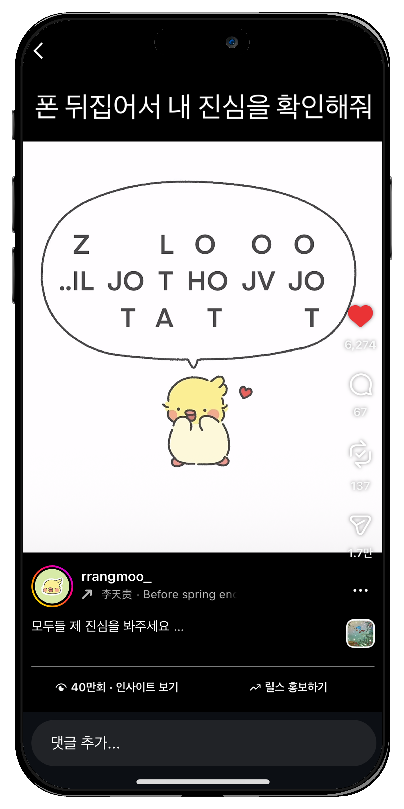

KEY ACHIEVEMENTS
주요 성과
40만회
최고 조회수
1.7만회
최고 공유수
약 4배
평균 조회수
평균 조회수 400% 성장,
캐릭터 '랑무' SNS 마케팅 전략
자체 캐릭터 '랑무'를 활용해 인스타그램 계정을 운영하며,
캐릭터와 콘텐츠 방향 리뉴얼을 통해 계정을 성장시킨 콘텐츠 브랜딩 프로젝트입니다.

40만회
최고 조회수
1.7만회
최고 공유수
약 4배
평균 조회수
BEFORE

AFTER

전략 수정 근거
인지도가 낮은 상태에서 단순 캐릭터 노출과
소수만 관심 있는 정보만으로는 성장이 어렵다고 판단
해결 전략
대형 캐릭터 분석 후 쉽게 공감하고 즐길 수 있는
대중적인 밈과 트렌드를 콘텐츠에 결합
목표
누구나 쉽게 즐길 수 있는 대중적인 계정으로
정체성 형성
조회수에 일희일비하지 않는 월/수/금 업로드라는 약속을 스스로 이행했습니다.
업로드 루틴 및 신뢰 구축

알고리즘 최적화
정기적 업로드로 탐색 페이지에 노출될 확률을 높여
더 많은 사람들에게 노출될 수 있습니다.
책임감 있는 브랜드 이미지
언제나 소통 가능한 활발한 계정이라는 인식을 만들어
인지도 낮은 랑무 캐릭터에 대한 신뢰를 형성했습니다.
업무 효율성
업로드를 루틴화해 번아웃 없이 장기적으로 계정을
운영할 수 있는 지속 가능한 구조를 만들었습니다.
업로드가 완료된 순간, 팬덤과의 소통을 시작했습니다.
Connection
캐릭터 인격화와 유대감 형성
랑무의 성격을 반영한 답변으로 팔로워가
캐릭터를 살아있는 존재로 느끼게 하면서
유대감을 쌓았습니다.
Initial Boost
초기 반응 확보를 위한 전략
업로드 직후 계정들과 활발히 교류하며
초기 좋아요와 댓글을 확보해 알고리즘이
콘텐츠 가치를 높게 평가하게 했습니다.
Golden Time
즉각적인 양방향 소통
모든 댓글에 빠르게 답글을 남겨 게시물이
활성화되게 하고 팔로워가 존중받는
느낌이 들도록 했습니다.
기존 트렌드를 활용해 많은 사람들에게 도달하고 공감을 얻었습니다.
밈 소스 이미지


익숙한 재미로 접근성 확대
이미 유행하는 친숙한 포맷을 빌려와
콘텐츠에 대한 거부감을 낮췄습니다.
평소 랑무를 모르던 사람들과 자연스럽게
유입될 수 있도록 하여 콘텐츠가 더 많은
사람들에게 도달할 수 있도록 했습니다.
캐릭터 성격에 맞춘 상황 재구성
단순히 유행을 따라하는 것이 아니라
랑무가 가진 성격과 태도에 맞춰 콘텐츠를
기획했습니다. 밈의 재미는 살리면서도
랑무의 캐릭터가 드러날 수 있도록 했습니다.
대중적인 트렌드를 분석하고 이를 랑무에 자연스럽게 녹여내
누구나 공감하고 편하게 즐길 수 있는 콘텐츠를 만들었습니다.
기존 트렌드를 활용해 많은 사람들에게 도달하고 공감을 얻었습니다.

참여형 콘텐츠로 행동 유도
화면을 뒤집어야 내용을 확인할 수 있는 '참여형 구조'를 기획했습니다. 유저가 메시지를 확인하기
위해 폰을 돌리는 과정에서 발생하는 반복 시청을 유도했습니다. 이를 통해 알고리즘이 콘텐츠 평가
지표로 삼는 '체류 시간'과 '반복 재생 횟수'를 확보해 게시물 가치를 높일 수 있었습니다.
알고리즘
체류시간
게시물 가치
시기적 적절성
연말이라는 시기적 특성에 맞춰 유저들의 '감사'와 '회고'의 마음을 겨냥했습니다. 누군가에게 감사의
마음을 전하고 싶은 유저들의 니즈를 공략해 랑무가 대변하게 함으로써 소중한 지인에게 공유하고
싶게 만드는 자발적 바이럴을 형성하고 외부 유입을 유도했습니다.
연말
감사와 회고
공유 바이럴

트렌드 키워드와 밈 결합
당시 폭발적으로 유행하던 '두바이 쫀득 쿠키'라는 핵심 키워드를 '주파수 밈'과 결합했습니다.
익숙한 포맷으로 쉽게 다가가고 핫한 소재로 시선을 끄는 이중 후킹 전략으로
일반적인 단일 소재 콘텐츠보다 비팔로워의 도달을 높이는 시너지 효과를 만들었습니다.
두쫀쿠
영상 노출
신규 유입
공유 명분으로 자발적 확산 유도
주파수 밈의 형식을 빌려 친구에게 두쫀쿠를 사달라는 메시지를 넣었습니다.
이는 유저들이 영상을 보고 친구나 연인에게 공유하는 명분이 되었습니다.
공유를 통해 알고리즘이 게시물을 높게 평가하고 확산이 이루어지도록 했습니다.
알고리즘
공유 바이럴
게시물